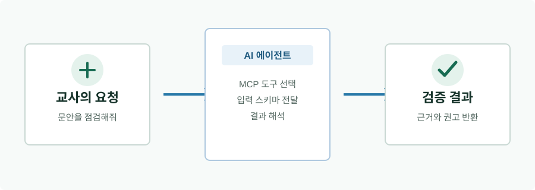
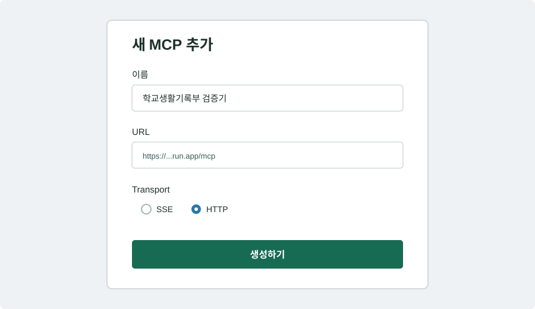
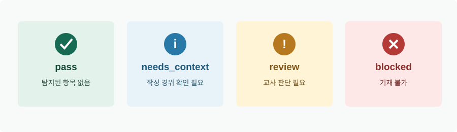

문안 점검
학교생활기록부 검증기 MCP를 사용해서
다음 초등 과학 문안을 점검해줘.
“교외 영어경시대회에서 대상을 수상함.”
공식 근거와 함께 결과를 설명해줘.교육·실습용 MCP · 2026 초등학교
학교생활기록부 문안을 AI가 공식 문서 근거와 함께 점검하도록 연결하는 도구입니다.
먼저 확인하세요. 교육부가 제작·검수·승인한 공식 서비스가 아닙니다. 최종 기재 여부는 최신 공식 문서와 학교 기준을 확인해야 합니다.

AI가 MCP 도구를 호출하고, 검증 결과를 다시 설명합니다.
ABOUT
교사가 작성한 생활기록부 문안을 교육부훈령 제555호와 2026 초등학교 학교생활기록부 기재요령에 대조해, 발견된 문제와 공식 근거를 AI가 설명하도록 돕습니다.
현직 교사 AI찬우쌤이 교사의 AI 활용 실습과 교육 공공성을 위해 만들었습니다. 교육자를 위한 AI 활용 서비스 classddok.com을 운영하고 있습니다.
HOW IT WORKS
“이 문안을 초등 생기부 기준으로 점검해줘”라고 요청합니다.
AI가 check_school_record 도구를 호출합니다.
봉인된 규칙팩과 사람이 확인한 공식 원문을 조회합니다.
통과·수정 권장·기재 불가를 구분해 보여줍니다.
CONNECT IN 3 MINUTES
MCP를 지원하는 AI 에이전트의 MCP 추가 화면에서 아래 값을 입력하세요. HTTP를 선택해야 합니다.
학교생활기록부 검증기https://school-record-validator-mcp-48287429068.asia-northeast3.run.app/mcp주소에 학생 문안을 붙여 넣는 것이 아닙니다. AI 에이전트가 이 MCP 서버를 도구로 호출할 수 있도록 등록하는 단계입니다.

등록을 저장한 뒤 새 대화에서 “학교생활기록부 검증기 MCP를 사용해줘”라고 요청합니다.
로컬 설치는 학생 문안이 컴퓨터 밖으로 전송되지 않습니다. Node.js 22.18 이상에서 다음을 실행합니다.
npm ci
npm run build설정 파일에 dist/index.js를 연결합니다.
READ THE RESULT
문안 자체를 기준으로 통과 여부를 먼저 판단하고, 교사는 실제 수행 사실과 최신 기준을 최종 확인합니다.

TOOLS
check_school_record한 문장 또는 여러 문장을 통과·수정 권장·기재 불가로 점검합니다.규정 원문 검색 등 전문 도구는 expert 모드에서만 노출됩니다.
EXAMPLES
학교생활기록부 검증기 MCP를 사용해서
다음 초등 과학 문안을 점검해줘.
“교외 영어경시대회에서 대상을 수상함.”
공식 근거와 함께 결과를 설명해줘.입력 record를 entries로 변환하라.
MCP의 check_school_record에 entries만 전달하라.
field는 subject_achievement_special,
profile은 official_plus_editorial로 고정하라.
findings와 needsContext를 구분해
교사에게 쉬운 말로 설명하라.SAFETY
공개 Remote MCP는 교육·실습용입니다. 실제 학생의 이름, 학번, 연락처, 주소를 입력하지 말고 가명·비식별 예시를 사용하세요. 서버는 학생 문안을 저장하지 않지만, 연결한 AI 호스트의 보관 정책은 별도로 확인해야 합니다.
FAQ
MCP를 지원하는 AI 클라이언트에 서버를 등록하면 AI가 도구 목록과 입력 스키마를 읽고 필요할 때 호출합니다. 첫 대화에서는 MCP를 반드시 사용하라고 요청하면 더 안정적입니다.
현재 공개 Remote MCP는 Streamable HTTP를 권장합니다. URL 끝은 /mcp이고 별도 Authorization header는 입력하지 않습니다.
아닙니다. pass는 현재 규칙팩에서 탐지된 항목이 없다는 뜻입니다. 교사의 직접 관찰, 사실성, 학교 업무 기준과 최신 공식 문서를 최종 확인해야 합니다.
현재 규칙팩은 2026학년도 초등학교 전용입니다. 다른 학교급 결과로 확대 해석하지 마세요.
아닙니다. 현직 교사가 교육·실습 목적으로 만든 공개 프로젝트입니다.